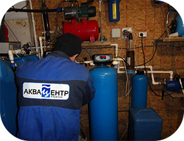
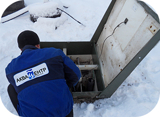

Главная / Услуги / Сервис
СЕРВИС


Любое инженерное оборудование нуждается в техническом обслуживание. В процессе эксплуатации, оборудование
подвергаются засорам и износу отдельных его частей, и для нормального функционирования возникает необходи-
мость в периодическом сервисном обслуживании.
Для вашего удобства мы предлагаем наши услуги сервисного обслуживания:
- Услуги по обслуживанию, ремонту и модернизации любых систем очистки воды
- Услуги по обслуживанию и ремонту автономных канализаций.системы очистки воды
- Услуги по замене, настройке и ремонту насосного оборудования
Выполняемые работы по обслуживанию систем водоочистки (техническое
обслуживание оборудования является обязательным условием безотказ-
ной работы системы водоочистки. Мы осуществляем сервисное обслужи-
вание как на основе Договора так и разового вызова):
- Визуальный осмотр оборудования (наличие протечек в местах соединений)
- Анализ исходной и очищенной воды на содержание железа, мар- ганца,солей жесткости
- Полная диагностика и настройка автоматики систем управления оборудования
- Промывка управляющих клапанов, инжекторов, солезаборных кла- панов системы автоматики
- Полная регенерация системы водоподготовки с визуальным кон- тролем всех циклов
- Проверка давления воды на входе системы водоподготовки, его настройка
- Доставка сменных и расходных материалов (таблетированная соль, реагенты, картриджи, УФ лампы и т.д.)


Работы по сервисному обслуживанию автономных канализаций.
- Откачка избыточного активного ила из камер
- Прочистка аэрлифтов и трубопроводов.
- Техническое обслуживание компрессоров.
- Диагностика электрооборудования
Преимущества нашего сервисного обслуживания:
- Профессиональный контроль оборудования
- Выезд сервис-инженера в течении 24 часов с момента обращения
- Техническая поддержка клиентов
- Гарантия низких цен
- Скидки на расходные материалы и сменные материалы
Мы устраняем чужие ошибки, и модернизируем оборудование водоподготовки.
Система очистки воды у Вас уже установлена, а из крана течет непонятно что? Вашему оборудованию требуется
срочная модернизация. Скорая помощь от "Аквацентр" приедет в любое удобное для Вас время. Мы проведем техни-
ческий осмотр и если потребуется модернизируем систему очистки воды, установленную некорректно с различными
нарушениями технологий.
Как определить, что пора звонить нам?
- Водоочистное оборудование устарело и неспособно решать поставленные задачи.
- Оборудование установленное несколько лет назад не отвечает современным требованиям. В этом случае необходимо провести диагностику и модернизацию системы очистки воды, с максимальным использованием комплектующих уже существующего оборудования. В итоге эксплуатационные расходы будут снижены, а эффективность работы повыситься.
- Ресурс работы фильтрующей загрузки исчерпан или подходит к концу.При необходимости мы заменим фильтрующую загрузку, на более качественную и эффективную.
- Также могут быть изношены отдельные части оборудования. В этом случае мы определим неисправность и заменим изношенные элементы. Вас не устраивает качество воды.Если качество воды после системы очистки оставляет желать лучшего, проблему решит полное техническое обслуживание с применением современных технологий.
- При возникновении проблемы обратитесь к нам.